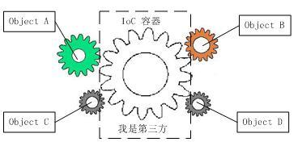

API
重点：$http
联系：在jQuery中，我们知道它的API通过一个全局对象：$ 暴露出来，当你需要 进行ajax调用时，使用$.ajax()就可以了。
AngularJS也暴露了一个全局对象：angular，也对ajax调用进行封装提供了一个 $http对象，
问题：试图沿用旧经验访问angular.$http时，发现不是 那么回事！
问题解决：依赖注入/DI
AngularJS把所有的功能组件都以依赖注入的方式组织起来：
示例： 
注意：在依赖注入的模式下，所有的组件必须通过容器才能相互访问。
这导致了在AngularJS中， 你必须通过一个中介才能获得某个组件的实例对象
示例： var injector = angular.injector(['ng']);
injector.invoke(function($http) {
// do sth.with $http
});